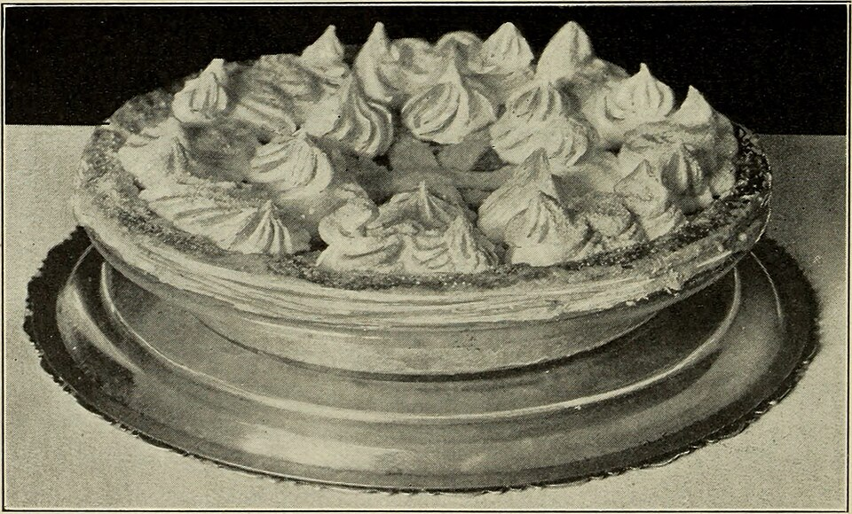

Tortas salgadas
Torta de queijo e milho

Ingredientes
- Recheio: 3 espigas de milho verde, ½ maço de couve, 2 colheres (sopa) de óleo, 1 cebola picada, ⅓ xícara (chá) de água quente, sal
- Massa: 2 colheres (sopa) de óleo, 3 xícaras (chá) de leite, 2 ovos, 1 xícara (chá) de farinha integral, 1 colher (chá) de sal, 1 xícara (chá) de queijo-de-minas curado ralado
Modo de preparo
- Refogue cebola e milho 15 min; junte água, couve e sal.
- Bata óleo, leite, ovos, farinha e sal. Despeje metade em assadeira untada, o recheio, o restante da massa e o queijo. Asse em forno médio até dourar.
Observação
Couve pode ser trocada por escarola, agrião ou talos de brócolis.